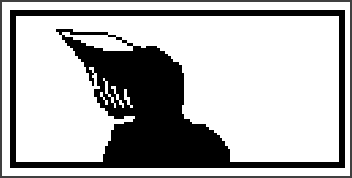
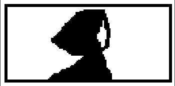
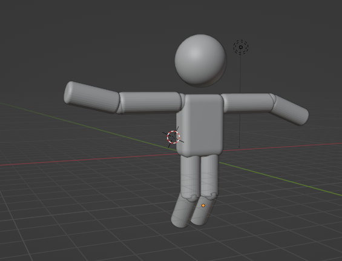
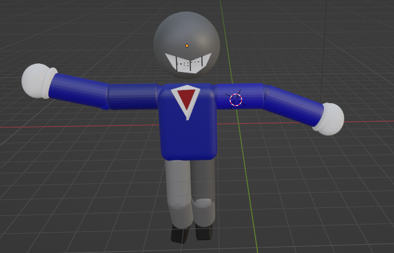
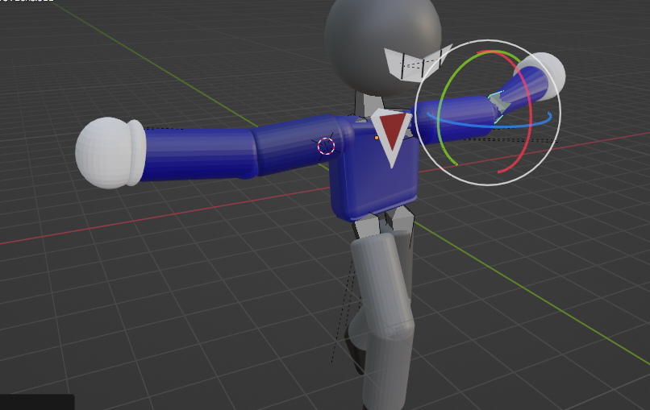

THE FATE
Developer Archive
hey ya.
if you're reading this...
congratulations.
you either clicked literally everything...
or opened the game's files.
either way... welcome.
Unused Music
Happy Place
Originally composed during Chapter 3's development.
This song represents Emilly's last peaceful memories.
Developer Comment
"I almost deleted this."
Principium
Basically Twilight Reverie's main theme.
Only transposed a few semitones down.
The demo version is the closest thing players can hear to the original theme.
Fun Fact
This concept is VERY old.
Tile v1
First menu theme.
It almost became Chapter 1's official menu music.
Lancer
"I still like this version."
Zaarden Legend (First Version)
i really forgot this music lol.
Probably composed during Chapter 1 DEMO's development.
I wanted more effect on this music, but i use FL Trial, and... the music stayed unfinished until now.
Concept Arts
don't laugh.
these are old.


Günch 3D Model
Yeah, this really existed.
Yes. I actually planned this before almost everything.




Chapter 2 Preview
Dont look at this. seriously.
there are spoilers.

Developer Comments
K.Z
"i forgot this page existed."
--------------------------
Zuki
"happy place still hurts."
--------------------------
Lancer
"gunch looked weird."
"very weird."
Random Notes
TODO
fix Günch's smile.
--------------------------
Ray is still shorter than he should be.
--------------------------
i still don't know why this song exists.
it just... appeared. well, the story its funny, but its strange too.
Well, the first memory I truly have dates back to the moment I gained consciousness. yeah. i'm not pranking. it might not have happened exactly like that... But that’s fine — and the only sound I recall hearing was something similar to the music mentioned earlier.
that's it.
thanks for checking this out.
now go back.
there's nothing else here.
...
or maybe there is.
.